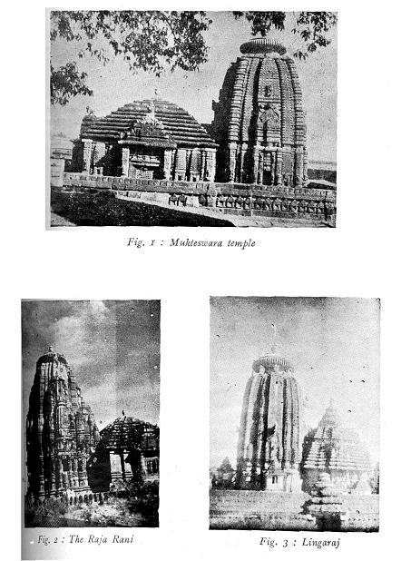
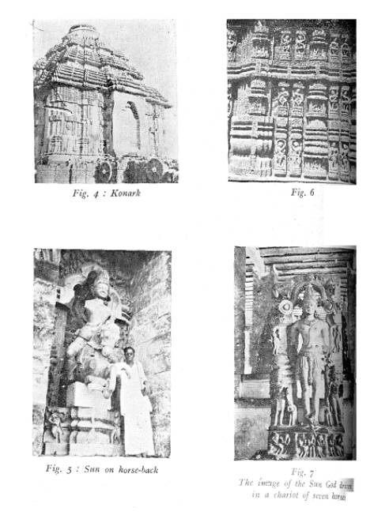

THE TEMPLES OF ORISSA
By.
N. SRINIVASA RAO, B.A.
(Artist
and Sculptor, Berhampur)
Orissa
was once a stronghold of Buddhism and Jainism. The mighty Emperor Asoka, after
the conquest of Kalinga, proclaimed Buddhism from the inscription of Dhauli (5
miles from Bhuvaneswar) and issued edicts for the just governance of the State
from the rock edict of Jaugada in Ganjam District. King Kharavela (Circa 450
B.C.) who had his capital at Sisupalgarh near Bhuvaneswar, and who constructed
some of the famous caves on the hills of Khandagiri and Udayagiri, also near
Bhuvaneswar, for the Jain monks, established Jainism in this country. The hills
are honeycombed with caves or cells, of which 44 have been found so far in
Udayagiri and 21 in Khandagiri. Many of them appear to have been excavated in
the 4th or 5th century B. C. as is evident from the Hathigumpha inscription. In
the words of Fergusson, “The picturesqueness of their forms, the character of
their sculptures and architectural details, combined with their antiquity,
render them one of the most deserving of a careful survey.
The
Hindu revival began from the 27th to 13th century A. D. with the performance of
a yagna by Yayati Kesari who requisitioned the help of 10,000 Brahmins
from Kanyakubja and performed the sacred rite at the modern Jazipur, formerly
known as Yagnapur, on the banks of the Vaitarini. This great and powerful
monarch gave a death blow to Buddhism by constructing innumerable Saivite
temples at Jazipur which was the capital of Kalinga. Next his attention centred
round Bhuvaneswar, the then stronghold of Jainism, and he constructed 9999
Saivite temples, as he could lavishly spend the accumulated wealth of his
prosperous empire. The first temples to raise their heads were perhaps the temples
of Parasurameswara and Mukteswara at Bhuvaneswar. The architecture of these two
temples is more than enough to prove that the Kesari architecture was by far
the best of the contemporary architectural styles of India. The temple of
Mukteswar (Fig. 1), worked in red sandstone which dazzles the eye of countless
observers, is one of the finest examples of Hindu architecture. “The grandeur
of this temple, the fine needle-work on stone, and its attractive imposition,
all prove eloquently what a masterly hand the Hindu architects of Kalinga
possessed in those days. It is the latest specimen of the medieval temples of
Orissa. The ‘Torana’ stands free of the inner enclosure wall, just in front of
the only opening in it. The capitals support the arch, which is circular and
built in sections on the principle of the true overlapping Indian arch.” The
temple of Mukteswara may be styled the epitome of Orissan architecture, showing
all that is best in it. “It may be called a dream in sandstone.”
The
superhuman efforts of Emperor Yayati Kesari, his tireless labour and great
determination, changed Bhuvaneswar into a city of temples and Gods, a city
which was destined to become the greatest centre of Saivism In India since
then. The culminating point of his creative genius seems to have been reached
when he laid the foundation of the great temple of Lingaraj (Fig. 3) at
Bhuvaneswar. The imposing and unique construction could not be completed by
Yayati Kesari, but his successor Lalitendra Kesari completed the construction
of Lingaraj temple. “The massive and imposing structure of the temple, along
with the finest type of needle decoration, has endowed the monument with a
masculine grandeur and feminine grace. The temple of Lingaraj is unquestionably
the greatest Hindu monument that exists till today, unrivalled for its body
build and beauty, for its sculptural and decorative art, and for the superb
engineering skill with which the temple had been built to defy the ravaging
effects of time. Over the surface of the stone the master builders of that age
had written down the strength, wealth, culture and splendour of their imperial
patrons.”
The
Ananta Vasudeva temple with a tank in front, Bindusagar, was constructed by
Bhavadeva. It is the only Vaishnavite temple at Bhuvaneswar,
dedicated to the divine brothers Krishna and Balaram. This temple consists of
Vimana, Jaganmohan, Natamandira and Bhogamandapa. The entire
group is enclosed in a compound wall. Being a Vaishnava temple, the principal
niches on the four sides contain Vaishnava images. In the Natamandira there is
a small pillar surmounted by a figure of Garuda.
The temple of Brahmeswara lies east of the temple of Raja Rani, in the fields. According to the inscription, Kalavati, the mother of Udyot Kesari, built the temple. The temple of Brahmeswara includes four small temples at the four corners and is surrounded by a stone compound wall.
The Vittal Deval and Raja Rani are two examples of exotic types. The Vittal Deval adopted an example of the Gopuram of the Dravidian style; the spire bears resemblance to those of Conjeevaram, Madura and Rameswaram. The Raja Rani temple (Fig. 2) seems to have been constructed in the Indo-Aryan style. The contour of the Sikhara is different from those of Parasurameswara and Lingaraj. Here the Sikhara is a gradually inclined curve, but this outline is broken by sharp projections in the shape of numerous miniature Sikharas, which are added to the main Sikhara in regular rows for its ornamentation in relief. It consists of a Vimana and a Jaganmohan. While the exterior of the Vimana is covered with beautiful human figures and other decorative motifs, that of the Jaganmohan is severely plain. The Raja Rani is famous for the beauty of its decorative art.
The
late Manmohan Chakravarti proved definitely that the temple of Jagannath at
Puri was built before the close of the 11th century and not 12th century as
Fergusson and other writers had supposed. Ananta Varma Choda Ganga began the
great temple and finished the Vimana, but the Jaganmohan was left unfinished
and was finished by his illustrious successor Anangabhima I. The commonplace
appearance of the Sikhara of the Jagannath temple is entirely due to the
modification of the outline which tends more to the Nagara (North Indian)
style, lacking however the dignity of the latter on account of the smooth
unbroken surface of the facades of the Sikhara. Very little sculptural
decoration is to be seen on the sacred and stupendous edifice. The plastering
of the temple has marred the decorative effect.
The
Natamandira and Bhogamandapa are later additions. The height of the Vimana of
the Jagannath temple is 214 ft. 8 inches. The Bhogamandapa was added, according
to the chronicles, by Purushottama Deva (1435-97).
After
the temple of Jagannath, the only other temple of Orissa, the history of which
is known, is the Surya Deval at Konark (Fig. 4) dedicated to the Sun God, on
the banks of the Chandrabhaga, facing the sea. This temple marks the change of
the Sun’s travel in the horizon from Uttarayana to Dakshinayana when the Sun’s rays
fall on the temple. The whole temple is conceived in the form of a Ratha or
Chariot with 12 pairs of wheels.

The
Vimana collapsed prior to the British conquest of Orissa. Narasimha Deva
(1238-1264), one of the most powerful monarchs of the Ganga Dynasty, built the
great temple of Konark. It is said that Narasimha I was cured of leprosy and
dedicated this temple to the Sun-God out of gratitude. The Sikhara was still
standing in 1837; but the whole of the Vimana has now disappeared with the
exception of the plinth moulding. In plan the arrangement of the shrine seems
to have been the same as in the temples of Lingaraj and Jagannath. It consisted
of a Vimana and a Jaganmohan. On the three sides of the
Vimana there are three structures, with staircases leading to the terraces in
front of them. The northern niche contains a standing
figure of the Sun on horse-back (Fig. 5), a very rare example of Indian
Iconography. The southern niche contains a standing figure of the Sun in the
usual manner. The western niche also contains a similar figure of a God.
The
temple of Konark is the embodiment of the supreme artistic, architectural,
sculptural and engineering skill that the Orissans possessed in those days.
Twelve hundred architects working for 12 long years built the temple. The
existing remains resemble the work of Gods. Here on the walls of Konark has
been displayed a rare craftsmanship by the Orissa sculptors and artists, and
here is to be found the crowning glory of Orissan architects. “From all points
of view, for artistic splendour, dignified structure, jewellery-like
ornamentation, delicacy of treatment and architectural composition, Konark is a
type by itself.” (Fig. 6)
“The
myths and legends, the poetic dreams of inspired sages, the conventional and realistic
portraiture of human life in all its phases, the astronomical and astrological
speculations and approximations, the observations of natural objects in plant
and animal life, the close study of human anatomy in its creative virility, and
finally the knowledge of mathematics and geometry, statistics and dynamics, and
the principles of architecture and sculpture which they reveal to the eye and
the mind of the observer, derive from traditional sources which are deeply
imbedded the heavy past.”
“The
entire edifice presents an integral conception of harmonious unity. The most
amazing distinction of Konark lies in the fact that it is the embodiment of an
integral conception, and presents the metaphysical and the physical in as many
aspects as the dreamer-poet who conceived the idea could
visualize. Judging by the faithful consistency of every detail of the pageant
of life chiselled all over the temple, it appears that the architect-design
while bringing into being the Sun’s legendary Chariot, cast a Sun’s-eye glance
over the globe and carved out of huge rocks whatever in his
imagination the Sun, while driving his Chariot athwart the Earth, would see.”
“The
Chariot is drawn by seven richly caparisoned horses, three on one and four on
the other side (Fig. 7). They represent the seven fleeting days of the week. In
the conventional image of the Sun-God, the seven horses are driven by Aruna
(the Dawn), and while the Middle team of three horses faces straight ahead, the
two pairs on either side face the past and the future in exquisitely graduated
degrees. The Chariot itself stands on twelve pairs of
wheels, symbolising the twelve months of the year. Each wheel has eight
emblematic spokes, the eight ‘pahars’ or divisions of the day and night. On
each spoke there appear figures which may have astronomical or astrological
significance. These symbolic figures appear to be in motion, for, as one moves
from one wheel to the other, one finds these figures moving up or down in a
circular motion, giving au impression of the Chariot being in its diurnal or,
maybe, in monthly motion through the Zodiacal mansions. The Chariot carries the
Deval and the Jaganmohan. In proportion to the surviving part of the temple,
the tower over the sanctuary must have been nearly 228 feet high, and
apparently it crumbled under its own weight a long time ago. Every inch of the
exterior of the temple is unbelievably rich in sculpture. From the base to the
top one witnesses terraced galleries of animal and plant life; hunting and
forest scenes; and almost all the phases of human life depicted, up and down,
across and around the walls, and architectural ornaments of the building. The
boldness and vigour, the plasticity and the dynamic sweep which one sees in all
the carvings, provide proof of the highest order of artistic conception and
execution. The sense of perspective of the master-sculptors who have adorned
the temple with statuesque figures of immense proportions, probably 60 to 70
feet above the ground level, is perfect; and their study of human anatomy in
complex movements beyond praise. The intricate traceries which have been worked
out with the skill of the jewelers are exquisite. It is all a phantasy and an
allegorical rhapsody in stone.” (These quotations are taken from the article on
‘The Sun-God’s Temple at Konark’ by Mr. M. Asaf Ali, Ex-Governor of Orissa.)

Several
writers on Indian architecture, especially of temple construction, say that the
temple construction of Orissa is wholly different from that of the North
Indian, Western and Dravidian styles of temple architecture. No doubt Orissa
imbibed some of the features of the Northern and Southern types of
architecture, but it has evolved its own type of architecture totally different
from them. The halls that are added to the Vimana, under the names of
Jaganmohan, Bhogamantapa and Natamandira, are the peculiar and distinctive
features of the Orissan type of architecture. These features are wholly absent
in other types of temple construction in the North, South and the West.
If
one carefully surveys the great temples of Jagannath at puri, Lingaraj at
Bhuvaneswar, and Konark, one sees invariably the Navagraha slabs, on which the
9 planets are carved in relief, kept in some prominent
place of the temple, thus suggesting that the inner shrine where the supreme
Deity is enthroned is the centre of the Universe, from
which the important planetary influences emanate. Each important ‘graha’
aspects its own house, the 7th house, from where it is situated. Guru, Mars and
Saturn have extra aspects; Guru’s vision falls on the 5th and 9th house besides
the 7th house; Mars aspects the 4th and 8th house besides the
7th house; Saturn aspects the 3rd and 10th house besides the 7th house. The
total aspects of the Navagrahas seem to be 24 in number. If we carefully
examine the plinth area of the Jagannath temple at Puri and the Lingaraj temple
at Bhuvaneswar, there are angular projections at the base of the Vimana which
clearly suggest the aspects of the planetary system. This suggestion indicative
of the inter-relation of the Navagrahas with the Universe is the unique,
crowning and distinctive feature of Orissan architecture. In no other type of
architecture do we find the correlation of the planetary system with the
supreme Deity who is enshrined on the throne of the Vimana whose tower
generally ends in a spire. This pyramidal construction of the Vimana reaching
colossal heights emphasises the grandeur and aesthetic value of the temple
which is visible from some miles. Great devotees mutter their prayers, looking
at the Amalaka or Chakra or Trisula of these temples both at day-dawn and at
twilight time.